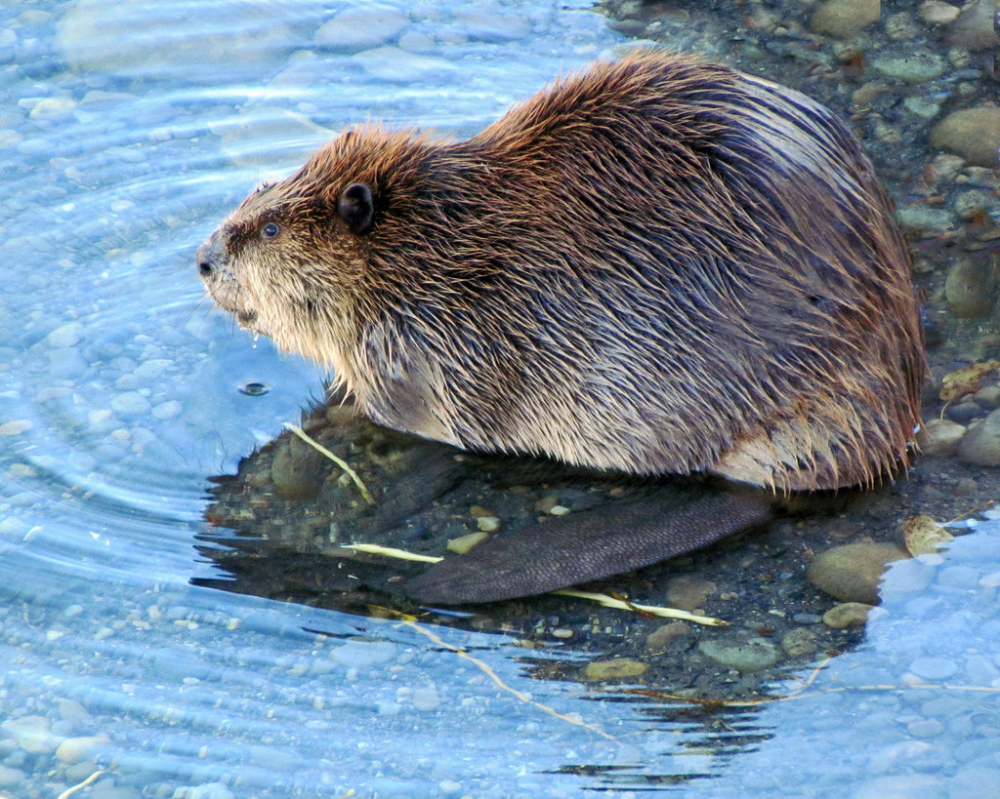
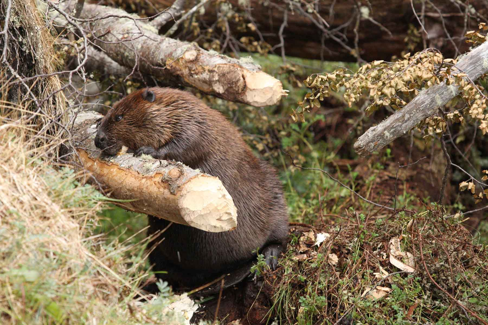
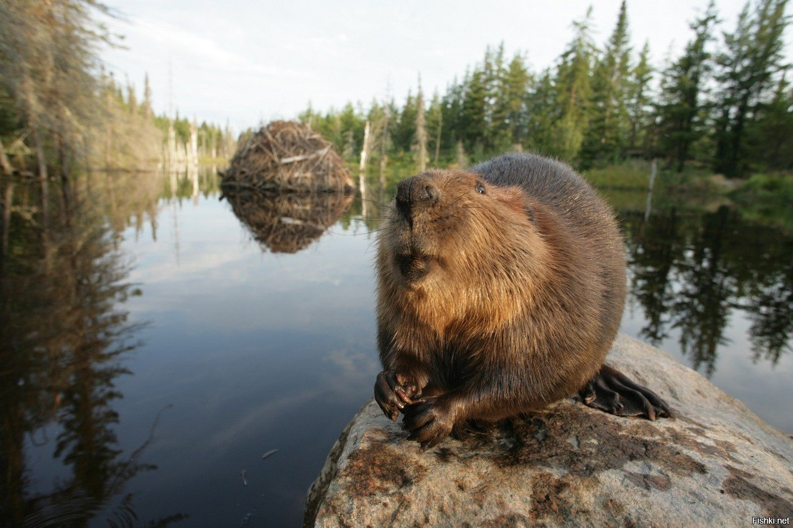
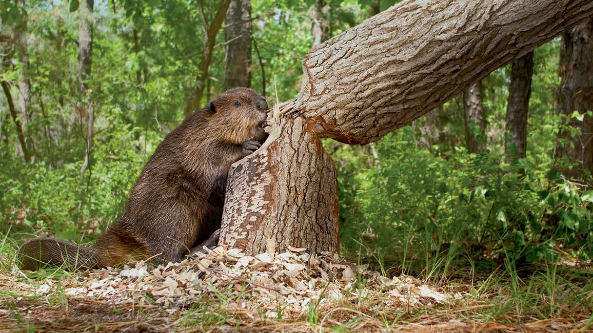
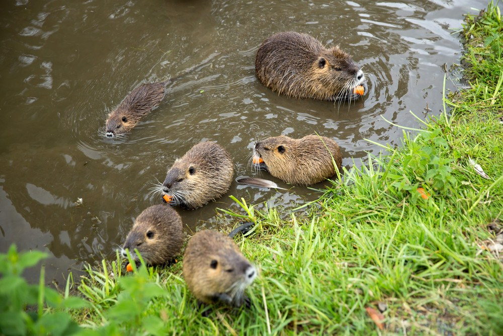
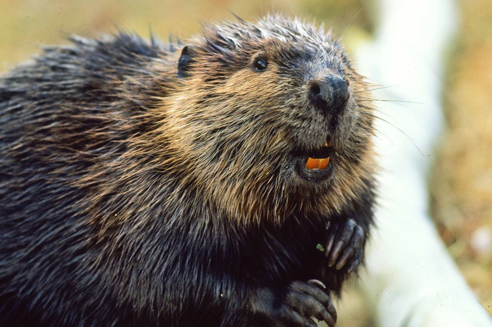

Бобры. Страница про бобров...
Потому-что бобры - это круто

А вот Канадский бобер сидит у реки. Поглядите как он смотрит в воду - наверняка увидел рыбу.

Бобер грызет древесину молодого дерева. Они делают это для создания плотин, так они облегчают поиск пищи.

Бобер позирует на фоне своей хатки. В хатке он будет жить и растить потомство.

Иногда бобры пилят большие деревья. Только посмотрите - диаметр дерева сопоставим с размерами самого бобра.

Бобер, бобриха, и маленькие бобрята. У бобров бывает не более 4 бобрят в выводке.

Обратите внимание на зубы бобра. Они растут на 0.5 сантиметра в год и имеют оранжевый оттенок.